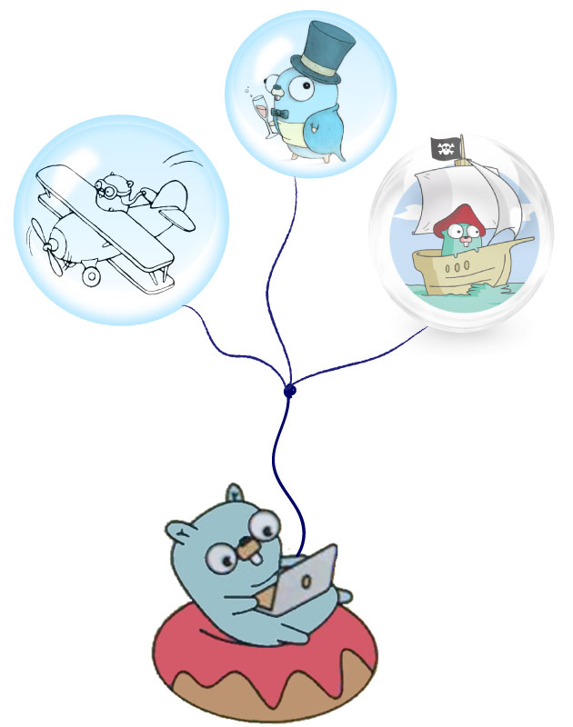

Services
The Service represents a microservice in the Moleculer framework. You can define actions and subscribe to events. To create a service can use a schema directly, or use a simple struct.

Schema
The schema has some main parts: name, version, settings, actions, and events.
Simple service schema to define two actions
var mathService = moleculer.ServiceSchema{ |
Base properties
The Service has some base properties in the schema.
moleculer.ServiceSchema{ |
The Name is a mandatory property so it must be defined. It’s the first part of action name when you call it.
The Version is an optional property. Use it to run multiple version from the same service. It is a prefix in the action name.
moleculer.ServiceSchema{ |
version as prefix on action names is not implemented yet.
To call this find action on version 2 service:
broker.Call("v2.posts.find", nil); |
REST callVia API Gateway, make a request to
GET /v2/posts/find.
Settings
The settings property is a key-value store, where you can store every settings/options to your service.
var instanceSettings map[string]interface{} |
The
settingsis also obtainable on remote nodes. It is transferred during service discovering.
Mixins
Mixins are a flexible way to distribute reusable functionalities for Moleculer services. Moleculer will merges the mixins actions, lifecycle methods with the service schema.
In this way you can extend services and resuse functionality. When a service uses mixins, all actions, settings, and lifecycle methods are “mixed” into the service.
Example using moleculer-go/store
moleculer.ServiceSchema{ |
The above example creates an users service which inherits all from store.Mixin, overwrite the fields and populates setting and expose a new action called notify.
Merge algorithm
The merge algorithm depends on the property type.
| Property | Algorithm |
|---|---|
Name, Version |
Merge & overwrite. |
Settings |
Merge & overwrite. |
Metadata |
Merge & overwrite. |
Actions |
Merge & overwrite. |
Hooks |
Merge & overwrite. |
Events |
Concatenate listeners. |
Created, Started, Stopped |
Concatenate listeners. |
Mixins |
Merge & overwrite. |
Dependencies |
Merge & overwrite. |
| any other | Merge & overwrite. |
Merge algorithm examplesMerge & overwrite: if serviceA has
a: 5,b: 8and serviceB hasc: 10,b: 15, the mixed service will havea: 5,b: 15andc: 10.
Concatenate: if serviceA & serviceB subscribe tousers.createdevent, both event handler will be called when theusers.createdevent emitted.
Actions
The actions are the callable/public methods of the service. They are callable with broker.call or ctx.call.
moleculer.ServiceSchema{ |
You can call the above actions as
res := <-bkr.Call("math.add", map[string]int{ "a": 5, "b": 7 }); |
Inside actions, you can call other nested actions in other services with ctx.call method. It is an alias to broker.call, but it sets itself as parent context for tracing purposes.
moleculer.ServiceSchema{ |
Events
You can subscribe to events under the events key.
moleculer.ServiceSchema{ |
Grouping
The broker groups the event listeners by group name. By default, the group name is the service name. But you can overwrite it in the event definition.
moleculer.ServiceSchema{ |
Lifecycle events
There are some lifecycle service events, that will be triggered by broker.
import ( |
Dependencies
If your service depends on other services, use the Dependencies property in the schema. The service waits for dependent services before calls the Started lifecycle event handler and before the service is available in the registry.
moleculer.ServiceSchema{ |
The Started service handler is called once the users and comments services are available (either in the local or remote brokers).
Publish your Service
bkr := broker.New(&moleculer.Config{}) |
Struts
struts?
Can I craft my services using a simple struct? Or even reuse an existing objects?
Yes you can! 👏 👏 👏
The only requirement is that it must have a method func (x MyObject) Name() string { return "ana" }.
And that is it.
type myOwnType struct { |
Beyond that there are the conventions that you need to follow to expose useful actions and listen to events.
//... |
What other ways can I have my actions?
import ( |
Internal services
The Broker contains some internal services to check the node health or get some registry informations. You can disable to load them with the DisableInternalServices: true config option.
List of nodes
It lists all known nodes (including local node).
nodes := <-broker.Call("$node.list", payload.Empty()) |
Parameters
| Name | Type | Default | Description |
|---|---|---|---|
withServices |
bool |
false |
List with services. |
onlyAvailable |
bool |
false |
List only available nodes. |
List of services
It lists all registered services (local & remote).
services := <-broker.Call("$node.services", payload.Empty()) |
Parameters
| Name | Type | Default | Description |
|---|---|---|---|
onlyLocal |
bool |
false |
List only local services. |
skipInternal |
bool |
false |
Skip the internal services ($node). |
withActions |
bool |
false |
List with actions. |
onlyAvailable |
bool |
false |
List only available services. |
List of local actions
It lists all registered actions (local & remote).
actions := broker.Call("$node.actions", payload.Empty()) |
Parameters
| Name | Type | Default | Description |
|---|---|---|---|
onlyLocal |
bool |
false |
List only local actions. |
skipInternal |
bool |
false |
Skip the internal actions ($node). |
withEndpoints |
bool |
false |
List with endpoints (nodes). |
onlyAvailable |
bool |
false |
List only available actions. |
List of local events
It lists all event subscriptions.
events := <-broker.Call("$node.events", payload.New(map[string]bool{ |
Parameters
| Name | Type | Default | Description |
|---|---|---|---|
onlyLocal |
bool |
false |
List only local subscriptions. |
skipInternal |
bool |
false |
Skip the internal event subscriptions $. |
withEndpoints |
bool |
false |
List with endpoints (nodes). |
onlyAvailable |
bool |
false |
List only available subscriptions. |
Health of node
Not Implemented yet!
It returns the health info of local node (including process & OS information).
health := <-broker.Call("$node.health", payload.Empty()) |